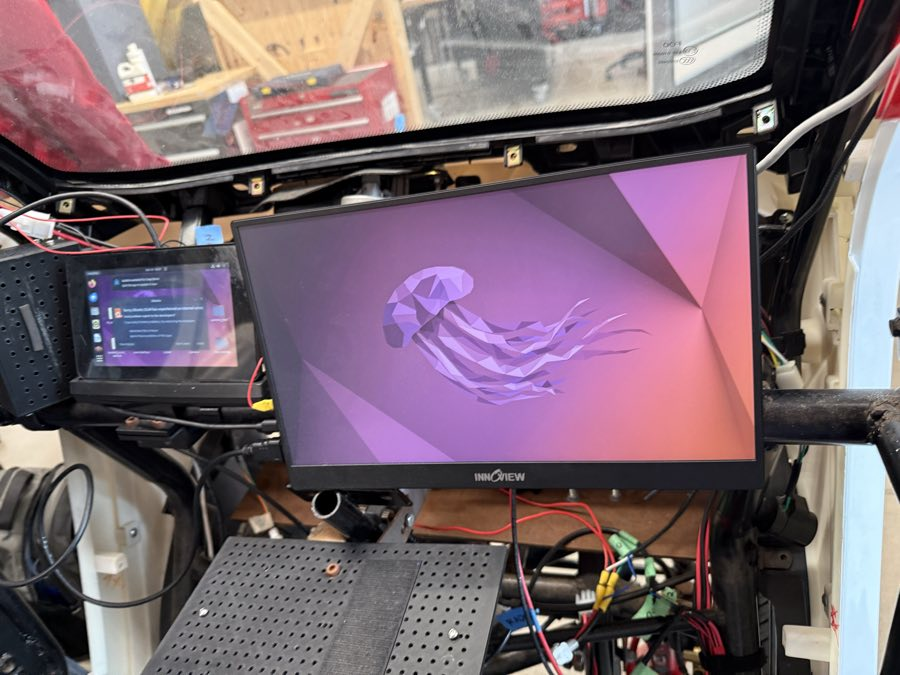

Power on the car → the HUD fills the small screen, the map fills the big one. Both start by themselves at login, and come back 5 s after a crash.
Built, not yet on the car
Everything below is ready in the repo (15 Oct) and untested on the car. Friday's audit tells us which computer drives the screens and what it calls them.

| Screen | Size | Shows | Program | Its unit |
|---|---|---|---|---|
| Small touchscreen, left | ~7" | the instrument cluster: speed, mode, gear, e-stop button, camera, GPS | hud |
aav-hud.service |
| Innoview monitor, right | ~15" | the map: Nav2's map over Ottawa's streets, place search | map |
aav-map.service |
Both are in src/hud/aav_hud_raylib (HUD).
How it starts
power on → desktop login → graphical-session.target ─┬─► aav-hud.service ─► car_screen.sh hud ─► hud --fullscreen --monitor <HUD's>
(auto-login: a system (or the autostart └─► aav-map.service ─► car_screen.sh map ─► map --fullscreen --monitor <map's>
setting, below) entry, see below) ▲
~/.config/aav/screens.env: which monitor, ROS domain, map files| Part | Where in git | Installed to | Does |
|---|---|---|---|
aav-hud.service, aav-map.service |
tools/screens/ |
~/.config/systemd/user/ |
systemd user units: start with the desktop, restart 5 s after any exit, log to the journal |
aav-screens.desktop |
tools/screens/ |
~/.config/autostart/ |
for desktops that don't start graphical-session.target: shares DISPLAY with systemd, starts both |
screens.env |
tools/screens/ (template) |
~/.config/aav/screens.env |
the settings (below). Kept when you install again |
car_screen.sh |
tools/ |
stays in ~/aav-jazzy/aav/tools/ |
reads the settings, checks them, runs ros2 launch aav_hud_raylib hud.launch.py fullscreen:=true monitor:=... |
car_screens_install.sh |
tools/ |
stays there | copies, enables, removes |
The settings: ~/.config/aav/screens.env
| Key | Example | Means |
|---|---|---|
AAV_HUD_MONITOR |
HDMI-2 |
the HUD's monitor: its name exactly, or its number (0 = the first). Empty: the HUD doesn't start |
AAV_MAP_MONITOR |
HDMI-1 |
the map's monitor, the same way |
AAV_ROS_DOMAIN_ID |
42 |
our ROS network: the car's stack is on 42, never 0 or 10 (the 2025-26 team's) |
AAV_STREET_MAP |
/home/aavui/aav-jazzy/aav/maps/streets/ottawa.pmtiles |
the street map, a full path. Empty: config/map.yaml's |
AAV_PLACES |
/home/aavui/aav-jazzy/aav/maps/places/ottawa.db |
the place search's database, a full path |
- One
KEY=valuea line. Nothing is expanded: no~, no$HOME. - A wrong or empty setting stops that screen with exit code 78, and the journal says what's wrong. systemd doesn't retry that one: fix the file, then restart it.
- Not
--local: on the car the screens must see the car's ROS graph.
Which monitor: names, not guesses
~/aav-jazzy/aav.sh tools/car_screen.sh --list # what the HUD seesnumber name size at
0 "HDMI-1" 1920x1080 0,0
1 "HDMI-2" 800x480 1920,0| Rule | Why |
|---|---|
| A name must match exactly | HDMI-1 is never "close enough" to HDMI-2 |
| A missing monitor is an error that lists the ones there | a map on the HUD's screen is worse than no map |
| Two monitors with one name: use the number | some systems name a monitor by its model |
--monitor works by hand too |
pixi run hud fullscreen:=true monitor:=HDMI-2, or hud --demo --monitor 1 |
- On X11, the names are the same as
xrandr --listmonitorsshows. - On a Wayland desktop (Ubuntu 22.04's default on some Pis), our windows run through
XWayland, and the names may read
XWAYLAND0,XWAYLAND1. Use--listand the numbers, or log in to "Ubuntu on Xorg". The audit finds out which (W10). - raylib draws through GLFW on X11. A computer with no desktop at all (plain KMS/DRM) would need raylib built for DRM, with one screen only: not planned.
Install (on the car computer with the screens)
bash /media/$USER/<stick>/car-kit/car_install.sh --screens --dry-run # look first
bash /media/$USER/<stick>/car-kit/car_install.sh --screens # builds the HUD, then installsAlready installed? Just the screens: bash ~/aav-jazzy/aav/tools/car_screens_install.sh [--dry-run].
| Step | Do |
|---|---|
| 1 | ~/aav-jazzy/aav.sh tools/car_screen.sh --list: note both names |
| 2 | write them in ~/.config/aav/screens.env |
| 3 | ~/aav-jazzy/aav.sh tools/car_screen.sh hud --print (and map): checks, runs nothing |
| 4 | systemctl --user restart aav-hud aav-map |
| 5 | reboot: both come back on their own |
- It needs no sudo. The units run as the user who logs in to the desktop.
- Boot to the desktop with no password (auto-login) is a system setting, and needs an
admin: on Ubuntu, Settings → Users → Automatic Login (or
/etc/gdm3/custom.conf). Ask the team first: the 2025-26 setup may already do it. - The kit copies the map's two files (
maps/) when they were downloaded on the Mac beforepixi run car-kit.
Day to day
| Want | Run |
|---|---|
| Their logs, live | journalctl --user -u aav-hud -u aav-map -f |
| Are they running? | systemctl --user status aav-hud aav-map |
| Stop them until the next boot | systemctl --user stop aav-hud aav-map |
| Never start them | bash ~/aav-jazzy/aav/tools/car_screens_install.sh uninstall (keeps screens.env) |
| Try one by hand | ~/aav-jazzy/aav.sh ros2 launch aav_hud_raylib map.launch.py fullscreen:=true monitor:=HDMI-1 |
No HUD, no Nav2. The HUD sends a heartbeat. On the car, the sensor watchdog stops Nav2 and the AI slot while it's missing: stopping
aav-hudholds them too. A session with no HUD screen:car.launch.py watch_hud:=false, written on the test card.Latched (24 Oct). Once the HUD has run 5 s, a crash, freeze or stop holds Nav2 even after systemd restarts it: the screen says AUTO STOP, HUD LOST. A person checks the screen, then
pixi run watchdog-clear.
The 2025-26 way, for comparison
Their UI Pi started three scripts from systemd system services (hud/scripts/*_bootup.sh):
Flask, flutter run (a debug build) and OSRM in Docker, all from /home/aavui/Desktop.
Ours: two user units, no sudo, no Docker, release builds, a restart on a crash, and the
monitors named in one file. Theirs stay as they are until the team agrees to switch (A8).
What was tested
| What | Result |
|---|---|
hud-core screen: names, numbers, exact match, missing, two with one name, the listing |
works cargo test |
--monitor, --list-monitors options in hud and map |
works cargo test |
| The units and the autostart entry: sections, keys, ExecStart, restart rules | works a parser test (tools/tests/test_car_screens.py); no systemd-analyze on a Mac |
car_screen.sh: the settings, bad ones → 78, the command it runs |
works --print, in the same test |
car_screens_install.sh --dry-run, car_install.sh --screens --dry-run |
works on a Mac: shows the plan, refuses (not Linux), writes nothing |
shellcheck, bash -n |
works |
| A window on a chosen monitor | untested: no window could open from the session that built it (plain --demo failed the same way) |
| systemd starting them at login, on the car | untested: after the audit |